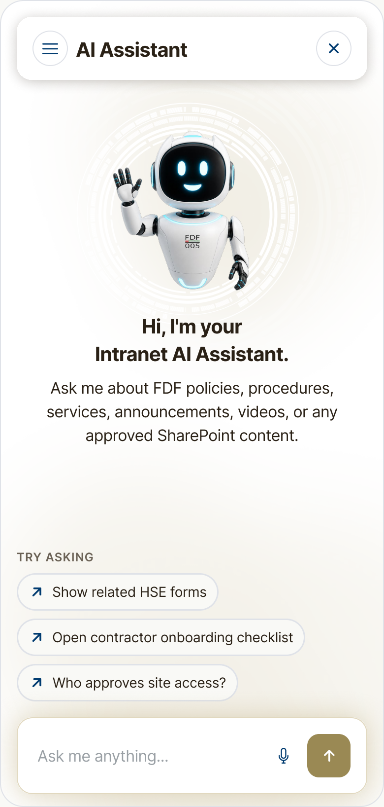
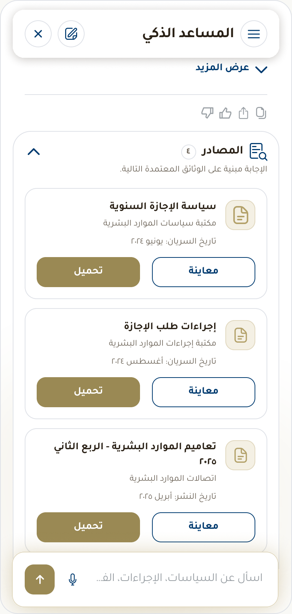

Designing conversational access to approved organizational knowledge.
I designed an internal AI assistant to help Family Development Foundation (FDF) employees discover relevant documents, understand AI-generated answers, and inspect their underlying sources. A new implementation—not a visual redesign of the existing E-Chat service.


E-Chat provides historical context for service interaction at FDF. The new intranet assistant addresses a different need: discovering and understanding approved organizational documents.
The source shows numbered service choices, direct question entry and routing to a live representative. It is not a menu-only experience, and it is not an earlier version of the new AI Assistant.
The new interface centers on natural-language questions, answers, Key Points and cited documents. Its design makes evidence visible alongside the answer, with source-level Preview and Download actions.
Actual visible E-Chat viewport extracted from board A. Service choices and direct entry are preserved.
Actual final answer state. This is a distinct product approach, not a before/after version migration.
The design materials describe requirements, not proven research findings. An employee must be able to ask, understand, verify, and take the next available action.
Allow a topic-based question without requiring an exact filename or folder. Suggested queries provide examples of possible requests.
Separate a direct answer from Key Points and expanded detail so a long response remains scannable.
Present sources near the response and make document-level metadata, Preview, and Download visible.
Date ranges and document filters appear in wireframes and flows. Final source cards include dates; a final chronological sorting control is not established.
Provide distinct loading, no-result, connection-error, and restricted-access messages, rather than treating all failures as empty results.
Preserve English and Arabic interface coverage, including native Arabic reading direction and corresponding interaction states.
The supplied evidence supports this stage sequence: original hand-drawn sketches → grayscale wireframes → final UI. It does not establish the research or rationale behind every change.
Login, assistant home, results, history, document list, preview, and Help & Support appear together. The original sheet is preserved as drawn.
The source section is named "Hi-Fi Wireframes," but its supplied screens are grayscale. These are original design-stage artifacts, not filters applied to the final UI.
Entry fields appear at the wireframe stage.
Example requests and quick actions organize the starting screen.
Document cards expose Preview and Download.
Category choices and recent searches are visible in this longer frame.
Time-grouped entries support returning to previous requests.
Filtering and document-level actions are explored in the wireframe.
An answer and expandable sources occupy a single conversational surface.
Arabic text, alignment and source placement are preserved from the original artwork.
Reconstructed from available design artifacts; requires validation against the original information architecture.
All hierarchy connections are proposed. Solid nodes indicate observed screens or content, not confirmed implemented navigation.
The proposed structure links assistant home, suggested queries, conversation, answers, sources, and document actions. History and settings support continuity and preference management.
Entry/login appears in sketches and wireframes, not supplied final UI. Help & Support is sketch-only. English settings is observed; a final Arabic settings counterpart was not found.
Editable web diagrams preserve the source flow sequence and branch logic. They document designed journeys, not verified production behavior.
Source 2026:34935 · Nine steps in the original sequence. The source labels interpretation as Copilot; actual configuration is unconfirmed.
Source 2026:34953 · YES and NO branches preserved. No automatic retry loop has been added to the original flow.
Reconstructed for this case study. The document-owner direction is visible in UI.
Privacy principle: Do not expose restricted titles, snippets, or confidential content. Only a clear explanation and permitted next actions should be shown.
This conceptual UX lifecycle describes how the assistant interaction is intended to work. It does not specify backend models or proprietary retrieval algorithms.
Conceptual model / not a verified technical architecture
A person asks in natural language or selects a suggested query. The visible text and voice controls are interface evidence.
The intended system identifies the user's intent and useful search terms. Ambiguous questions offer suggestions.
Relevant content is sought from approved intranet knowledge sources (SharePoint) within permission capabilities.
The assistant composes a response from available information, maintaining enterprise tone and scannability.
The supplied answer UI exposes Key Points and cited Sources. Users can inspect evidence rather than relying solely on generated text.
The user can refine the question, expand the answer, inspect source documents, or preview/download files.
A document-oriented interface is not evidence that a model was trained on organizational files. These mechanisms must be distinguished before describing the implementation.
Training changes learned model parameters. The supplied materials do not establish whether FDF used a foundation model, fine-tuning, or retrieval-augmented generation (RAG).
Preparing approved documents for lookup is separate from model training. Document selection, indexing, freshness, and removal policies are critical.
Instructions shape tone, answer structure, uncertainty, and restrictions without changing base weights.
Where supported by implementation, retrieved evidence informs a response with source citations.
Factual accuracy, attribution, bilingual quality, and restricted-content safety require explicit tests.
Auditing compliance, tracking revisions, and enforcing retention rules across organizational documents.
| Open Question | Status |
|---|---|
| Existing foundation model, fine-tuning, or RAG architecture? | Implementation detail to confirm |
| How are approved documents indexed, retrieved, updated, and removed? | Implementation detail to confirm |
| How are permissions enforced during retrieval, preview, and download? | Implementation detail to confirm |
| How are citations associated with specific answer claims? | Implementation detail to confirm |
| Is conversation history retained, and for how long? | Implementation detail to confirm |
| Is human review or user feedback part of the operating workflow? | Implementation detail to confirm |
| How are English and Arabic responses evaluated? | Implementation detail to confirm |
The actual answer UI separates explanation, summary, and supporting evidence. Annotations describe visible elements, while response-quality statements are evaluation criteria.
Answer text, Key Points, expansion, action icons, and Sources card.
The opening response addresses the request before the user reaches supporting detail.
A concise list supports scanning, preserving important conditions and exceptions.
Show more / View less controls distinguish concise and expanded response states.
The Sources card stays associated with the answer, exposing dates, Preview, and Download.
Small action icons (copy, thumbs up/down, share) enable immediate feedback.
The bottom input remains available to refine the query or ask follow-up questions.
Interacting with a response helps the user complete a task. It does not establish that the model learns from each conversation in real time.
The initial question sets the context. Narrowing wording is part of the intended conversational flow.
The wireframes explore document filters; no-result states supply wording suggestions.
Expansion lets a user inspect detail and evidence with visible Preview and Download actions.
Suggestion chips provide alternative paths when the query returns no eligible documents.
The source error state distinguishes connection failure from zero documents found, providing a Retry action.
Thumbs-up/down controls let users signal response utility, with history and diagnostics preferences.
Nineteen actual final states: ten English and nine Arabic. These are individual source extracts, not translated mockups.
| Date Type | Meaning | Verification Need |
|---|---|---|
| Created | When the file was first authored. | Not necessarily when the policy took official effect. |
| Modified | When the file was last edited. | May reflect a minor typographical fix, not a policy shift. |
| Uploaded | When added to the intranet portal. | An archive document may have been uploaded recently. |
| Effective | When the policy actively applies. | Verify through document headers, version tables, and metadata. |
Original source documentation and source-defined component specimens from board G. Recommendations are separated from source observations; this is not a complete WCAG audit.
--color-primary
#B3A16A
--color-primary-dark
#9A8955
--color-text-primary
#2B2116
--color-text-secondary
#6B6357
--color-surface-warm
#F5F1E4
--color-navy
#003C71
--color-border-medium
#E0E2E4
--color-border-gold
#E1D9BF
| Solid Color Pair | Reported Ratio | Recommendation |
|---|---|---|
| Primary Gold / White | 2.55:1 | Avoid white normal-size text on gold controls. |
| Gold Dark / White | 3.45:1 | Use dark text or increase weight above 18pt for AA compliance. |
| Dark Navy / White | 11.14:1 | Exemplary contrast across headline & button pairings. |
| Text Primary / Warm Surface | 11.8:1 | Comfortable readability across long body paragraphs. |
| Muted Text / Warm Surface | 4.03:1 | Review fine caption text sizes on warm card surfaces. |
The project is in implementation. This case study documents supplied design work, not deployment, adoption, AI accuracy, or measured productivity gains.
Original sketch sheet; six grayscale wireframes; ten English and nine Arabic final UI states; source-derived end-to-end and decision flows; explicitly reconstructed IA; documented colors, typography, components, and interaction states.
Team composition, implementation architecture, model configuration, permission enforcement, retention, evaluation, and operating workflow remain unconfirmed. Usability findings and production telemetry are actively tracked.
| Measurement Framework | What to Observe | Status |
|---|---|---|
| Time to retrieve | Query to correct document retrieval | Baseline needed |
| First-query success | Correct result from the initial question | Baseline needed |
| No-result rate | Queries without eligible relevant results | Baseline needed |
| Preview-to-download | Downloads following document previews | Baseline needed |
| Weekly active employees | Unique employees using the assistant each week | Baseline needed |
| Answer helpfulness | Useful responses assessed through feedback ratings | Baseline needed |
| Source coverage | Answers with valid supporting evidence citations | Baseline needed |
| Arabic vs English parity | Comparable task completion by language interface | Baseline needed |